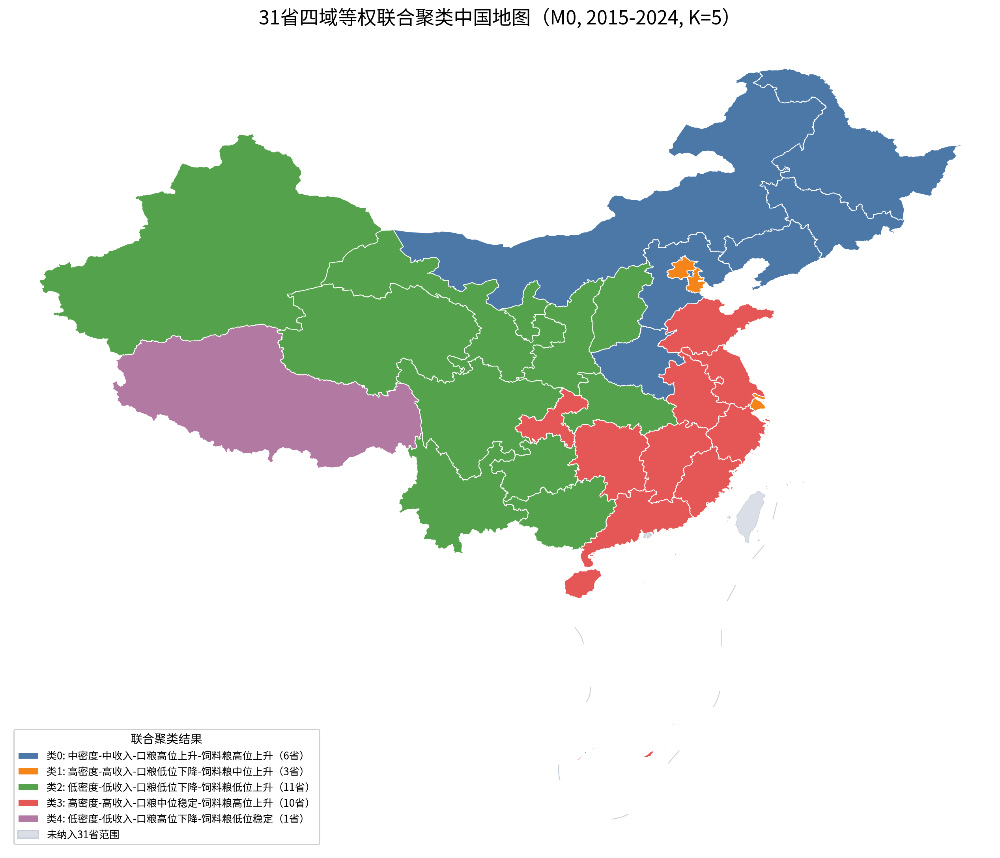
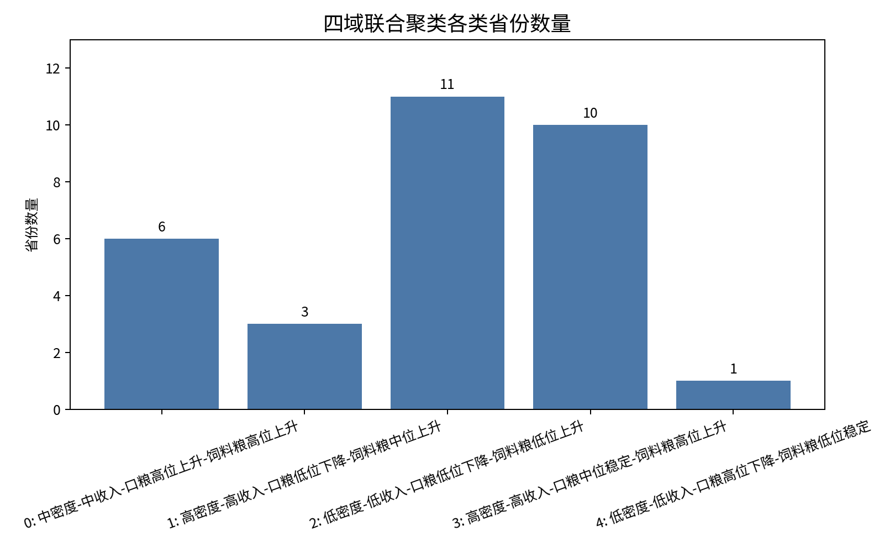
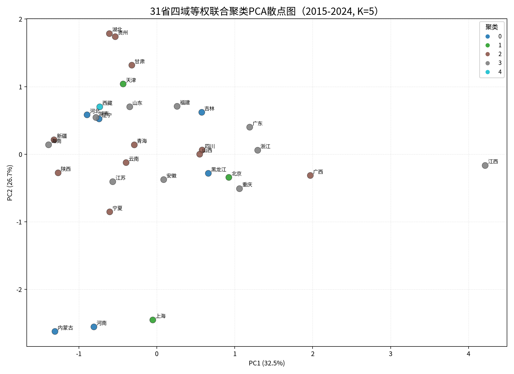
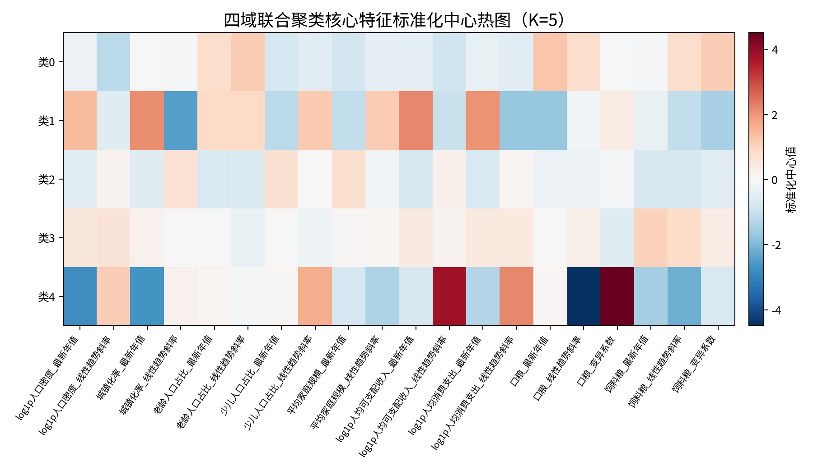
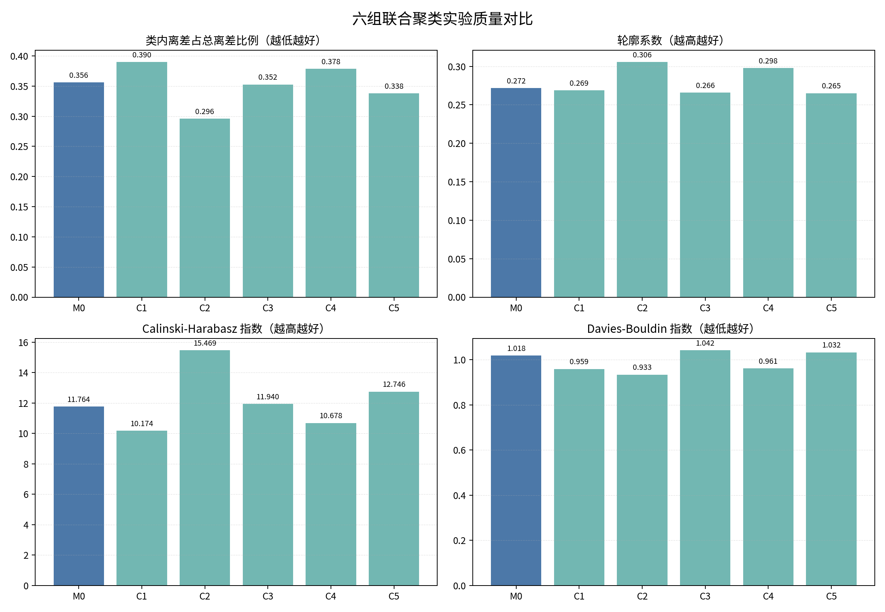
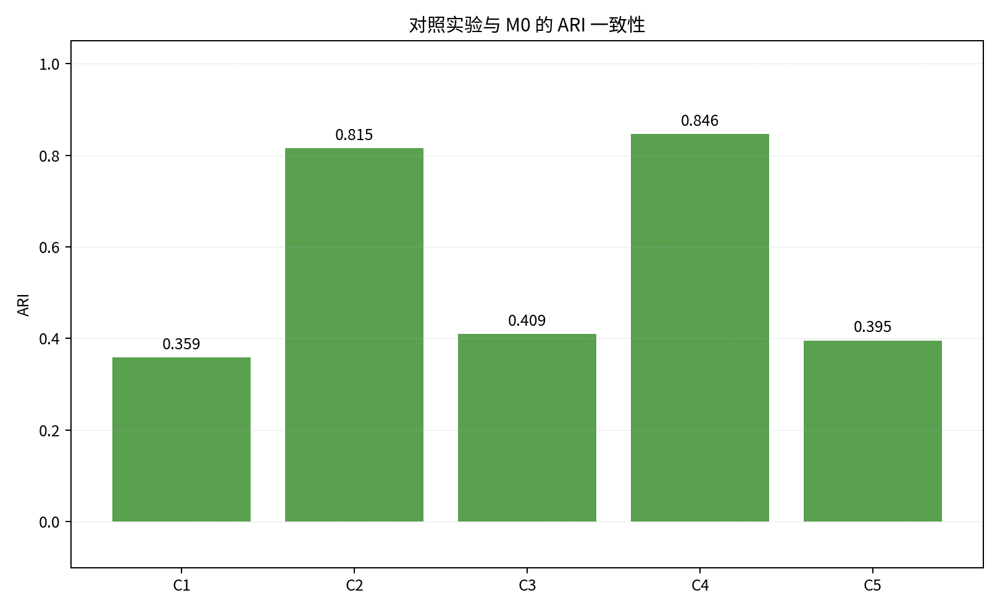
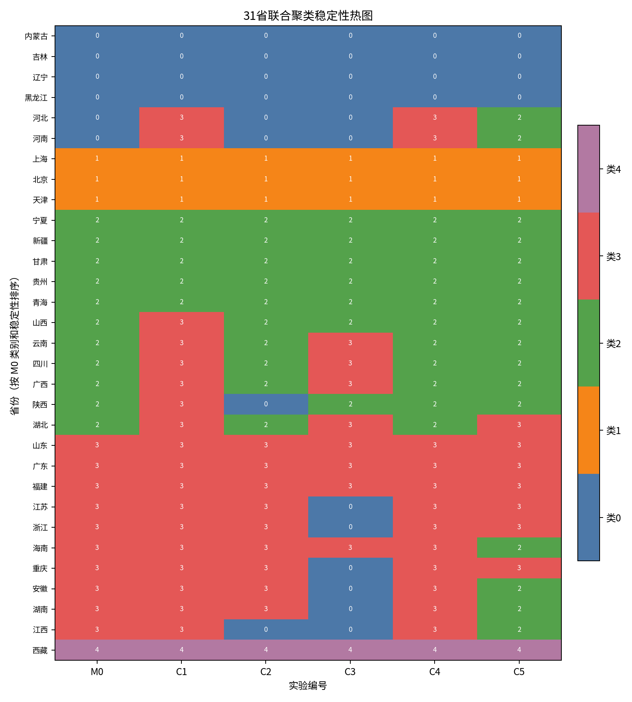
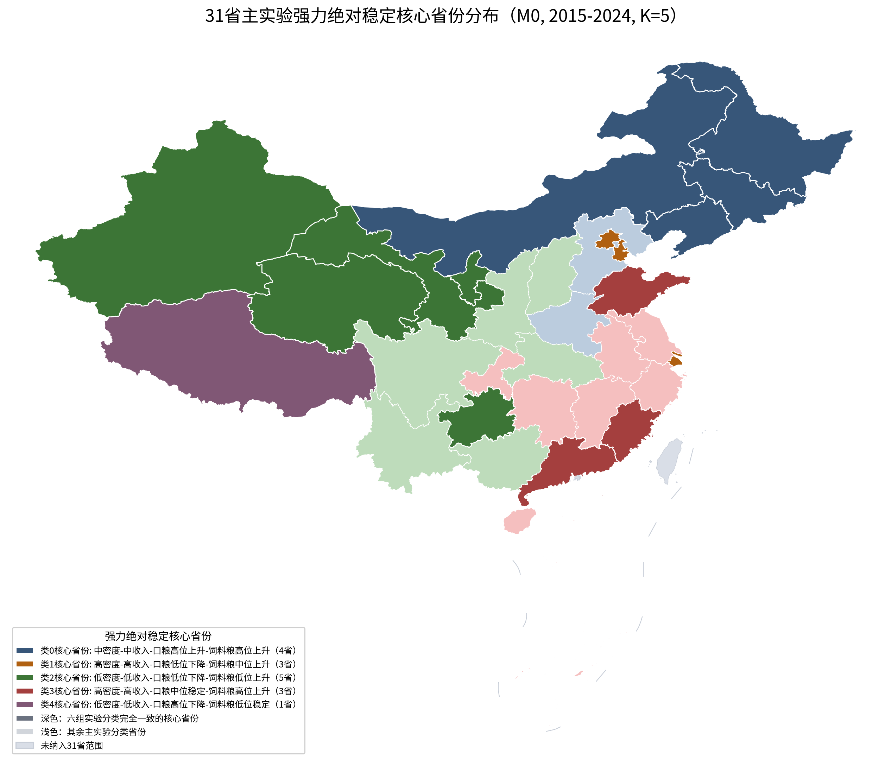

整合人口、经济、口粮和饲料粮特征的联合聚类结果与消融实验深度分析




经济与社会特征：中等人口密度与收入水平，城镇化率中等。
粮食特征：该类省份（多为北方与东北粮食主产区）口粮需求基数较高且持续呈现微弱的上升趋势；同时由于畜牧养殖增加，饲料粮消费也处在较高位且呈明显上升趋势。
经济与社会特征：超高人口密度、超高城镇化率与高可支配收入的典型超大型直辖市都市群。老龄化占比呈绝对高值。
粮食特征：居民人均口粮消费水平极低，且因为饮食结构多元化继续呈下降趋势；饲料粮消费处于中高位水平且由于高肉蛋奶摄入缓慢增加。
经济与社会特征：多为中西部省份，人口密度低、人均收入水平较低，少儿人口占比相对较高，老龄化步伐偏慢。
粮食特征：口粮人均水平较低且在持续萎缩，饲料粮人均需求同样基数低，但展现出平稳的缓慢追赶上升趋势。
经济与社会特征：多为东部沿海及南部经济发达的省区。人口密度偏大，城镇化高，居民可支配收入领先。
粮食特征：人均直接口粮消费处于中等位，波动极小，呈基本平稳状态。饲料粮折算值处于极高位（肉禽水产消费极多）且仍保持极强劲的上升增长势头。
经济与社会特征：典型的高原边疆地带，人口密度极低，家庭规模显著偏大。
粮食特征：直接口粮（青稞、面粉等）人均基数极大但正经历剧烈下降。饲料粮几乎处于最低位（畜牧业转化多为草场天然放牧且自给度高，饲料转化低）且基本保持稳定无增长。
| 实验编号 | 实验名称 | 保留指标域 | Silhouette | CH 指数 | ARI 一致性 | 各簇省份分布 (类0-4) |
|---|---|---|---|---|---|---|
| M0 | 四域等权主实验 | 人口、经济、口粮、饲料粮 | 0.272 | 11.764 | 1.000 | [6, 3, 11, 10, 1] |
| C1 | 所有特征直接等权 | 人口、经济、口粮、饲料粮 | 0.269 | 10.174 | 0.359 | [4, 3, 5, 18, 1] |
| C2 | 移除人口域 | 经济、口粮、饲料粮 | 0.306 | 15.469 | 0.815 | [8, 3, 10, 9, 1] |
| C3 | 移除经济域 | 人口、口粮、饲料粮 | 0.266 | 11.940 | 0.409 | [12, 3, 7, 8, 1] |
| C4 | 移除口粮域 | 人口、经济、饲料粮 | 0.298 | 10.678 | 0.846 | [4, 3, 11, 12, 1] |
| C5 | 移除饲料粮域 | 人口、经济、口粮 | 0.265 | 12.746 | 0.395 | [4, 3, 16, 7, 1] |


点击下方对照实验组别，对比不同特征消融设置下，31个省份聚类类别的空间分布与变化情况：


def build_experiment_matrix(
scaled_df: pd.DataFrame,
domains: list[str],
direct_feature_equal: bool,
) -> tuple[np.ndarray, list[str]]:
selected_cols = [col for domain in domains for col in DOMAIN_COLS[domain]]
if direct_feature_equal:
return scaled_df[selected_cols].to_numpy(dtype=float), selected_cols
blocks = []
for domain in domains:
cols = DOMAIN_COLS[domain]
# 对每一个域内的特征除以对应特征数目的平方根
# 从而将每个域的期望方差之和修正为 1.0 (等额贡献)
blocks.append(scaled_df[cols].to_numpy(dtype=float) / sqrt(len(cols)))
return np.concatenate(blocks, axis=1), selected_colsdef align_labels_to_baseline(labels: np.ndarray, baseline: np.ndarray) -> tuple[np.ndarray, dict[int, int]]:
best_overlap = -1
best_mapping: dict[int, int] | None = None
unique = sorted(np.unique(labels).tolist())
# K=5, 共有 5! = 120 种排列组合，直接暴搜耗时微秒级
for permutation in itertools.permutations(range(N_CLUSTERS)):
mapping = dict(zip(unique, permutation, strict=True))
mapped = np.array([mapping[int(label)] for label in labels], dtype=int)
overlap = int((mapped == baseline).sum()) # 计算与主实验重合的省份数量
if overlap > best_overlap:
best_overlap = overlap
best_mapping = mapping
if best_mapping is None:
raise ValueError("对照实验簇编号未能与 M0 对齐。")
aligned = np.array([best_mapping[int(label)] for label in labels], dtype=int)
return aligned, best_mapping以中科院地理所的静态土地面积表的代码（海南校正为 460000）为基准，在导入时利用 Pandas 自动强制转换并映射对齐，校正过程均保留在 行政区划代码校正记录.csv 中。
人口密度最高与最低省份相差过千倍，可支配收入绝对趋势斜率同样分布偏斜。模型在提斜率前，先执行 log1p(x) = ln(1+x)，再做列 z-score 标准化。
所有 KMeans 聚类过程均显式绑定 random_state=42、n_init=80 以及 max_iter=300，从而杜绝局部极小值造成的簇标签漂移。
在执行输出保存前，会自动对 12 项检查项目进行真值检查。一旦出现 NaN 值、空簇或省份遗失，程序会抛出异常自动中断，保证了数据的生产级鲁棒性。
| 省份 | 行政代码 | M0 主分类 | 综合画像标签 | 稳定实验数 (max=6) | 主要基本特征 (最新年值) |
|---|